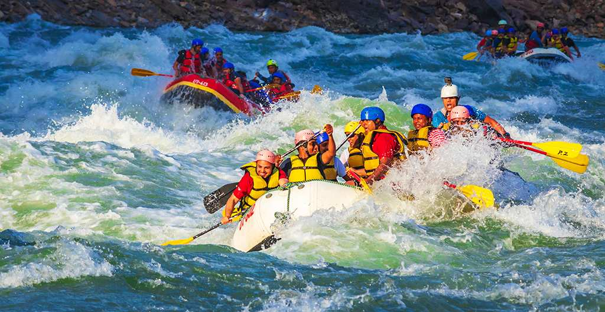
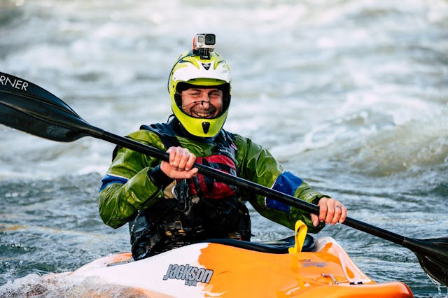
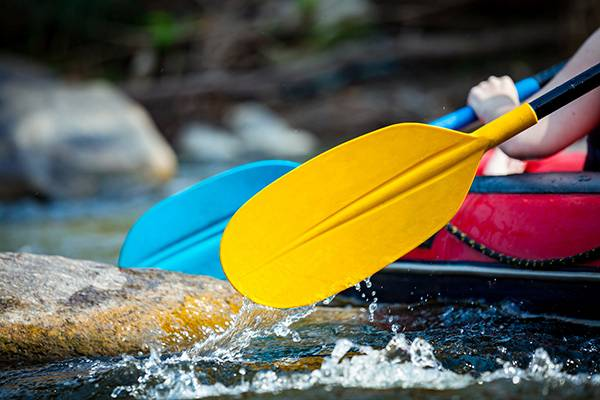
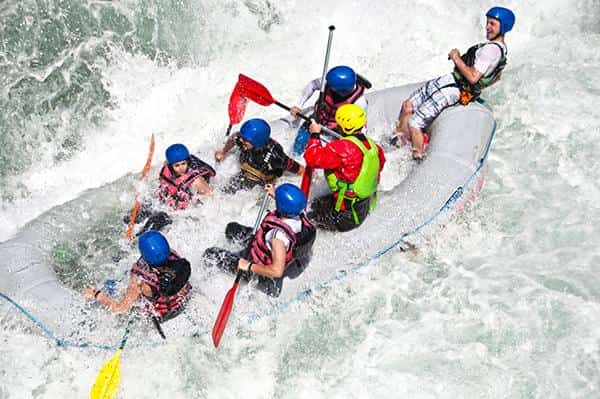
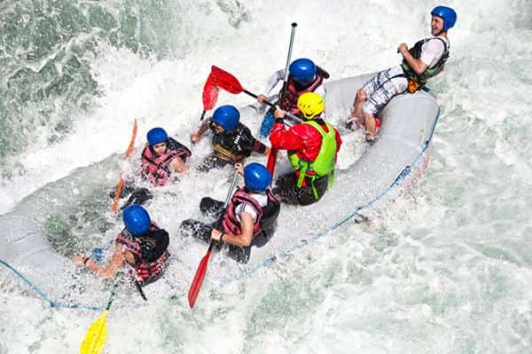

At Rapids White Water Rafting, our purpose is to bring adventure seekers closer to nature through thrilling and safe whitewater experiences. Our mission is to provide exhilarating, safe, and unforgettable rafting adventures while promoting environmental stewardship and fostering a community of outdoor enthusiasts. We believe in the power of nature to inspire, challenge, and unite people, navigating life as we navigate the rapids with courage, precision, and an unstoppable spirit. Committed to excellence, safety, and respect for our rivers, we strive to create exceptional experiences that leave lasting memories. "Ride the Rapids. Embrace the Adventure"


Rapids White Water Rafting
History
Rapids White Water Rafting was founded in 2022 by a group of adventure enthusiasts passionate about sharing the thrill of whitewater rafting. Starting with guided tours, the company quickly gained a reputation for safety, professionalism, and unforgettable experiences. Over the years, it expanded to offer diverse routes, customized adventure packages, and expert-led expeditions for all skill levels. With a commitment to excellence and environmental responsibility, Rapids White Water Rafting continues to provide adrenaline-pumping adventures while fostering a deep respect for nature.
Adventure Awaits You!


 
